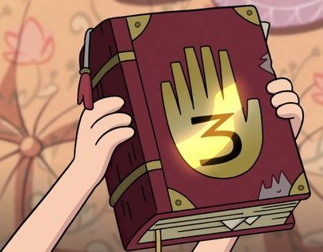
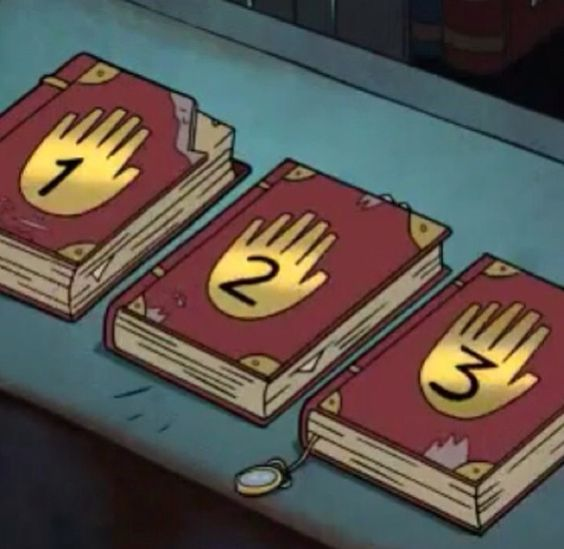
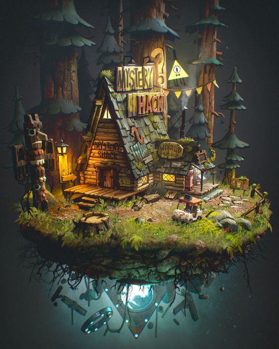
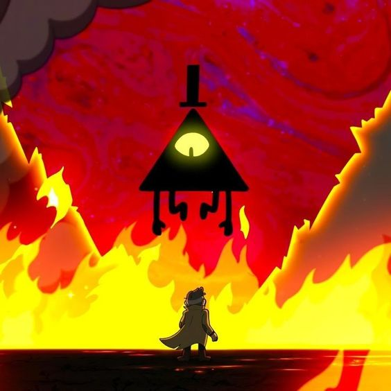
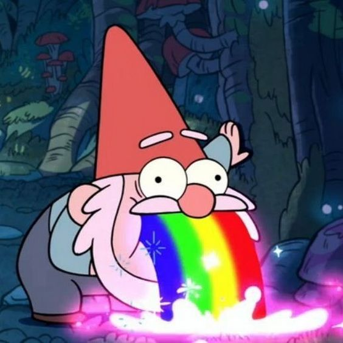

GRAVITY FALLS
A HISTÓRIA
As aventuras de Dipper e Mabel são inspirados na infância do criador da série, Alex Hirsch e sua própria irmã gêmea. Tudo começa de forma bem simples quando os irmãos gemeos decidem passar as férias de verão com seu tio-vô Stan em sua armadilha para turistas chamada de Cabana do Mistério do misterio na afastada cidade de Gravity Falls. Mas a cada novo episódio descobrimos alguma loucura paranormal que provam que a Cabana do Mistério não é para amadores.
Logo no primeiro episódio, Dipper encontra um diário misterioso no seu quarto. Em sua capa, uma mão dourada com um número 3. Em suas páginas, diversas anotações feitas à mão por um autor desconhecido sobre criaturas mágicas e outras esquisitices.
 
Qualquer um teria dispensado tudo aquilo, mas com todos os eventos aparentemente inexplicáveis que acabam acontecendo, aquele livro se torna a chave para entender a origem de toda essa bagunça.
  
PERSONAGENS
Dipper Pines - É um adolescente de 12 anos, ele gosta de ler, é inteligente, curioso e aventureiro, possui uma irmã gemea chamada Mabel Pines. Com uma curiosidade fora do normal, Dipper não consegue ficar quieto e está sempre a procura de mistérios. Ele é descrito pela sua irmã como paranoico e obcecado pelo sobrenatural, as vezes é um pouco cínico algo que herdou de seu tio Stan. Ele é o mais prudente e maduro dos dois gêmeos, ele odeia ser tratado como criança ou que lhe achem fofo. Por mais que Dipper erre ele está sempre aprendendo com seus erros. Ele é um tanto protetor com sua irmã, quando ela está em problemas, ele está sempre lá para ajudá-la e fará de tudo para a salva-lá quando necessário. As situações que se deparam incluem lidar com várias criaturas sobrenaturais ou lendárias, como gnomos, demônios, aliens, minotauros e o sempre nefasto Bill Cipher.
Mabel Pines - É uma menina de 12 anos enégica, alegre e amavel. Ela usa uma enorme variedades de sueteres coloridos, um para cada ocasião. Em um feira da cidade Mabel ganha Waddles, o porco, que se torna seu companheiro e melhor amigo, depois de seu irmão. Mabel acredita que Dipper está sendo paranoico quando conta suas descobertas sobre a cidade, ja para ela nada pode estragar suas chances de um romance épico de verão e mostra sua obsessão por garotos logo no primeiro dia, mas tudo vai por água a baixo, e Mabel acaba se envolvendo em uma série de acontecimentos bizarros, junto com seu irmão Dipper. Ela pode se tornar emocionalmente instável as vezes, ocasionalmente se tornando egoísta e deixar seus projetos pessoais acima dos que têm com seu irmão, mas estará disposta a abandona-los para ajudar e proteger seu irmão Dipper.
Stan Pines - Seu nome completo é Stanley Pines, ele também possui um irmão gemeo mais velho, Stanford Pines. Ele possui o primeiro diário e o esconde de todos. A primeira vista, Stan é apenas um vendedor sábio e astuto, montando uma armadilha para turistas em uma cidade com clientes desavisados atraindo-os pelos mistérios. Ele é muito sincero e direto chegando a ser mau educado, parece ter um humor cínico, burlando a lei muitas vezes, e pregando peças em concorrentes, se mostrando ganancioso e individualista. Apesar das atitudes negligentes com os seus sobrinhos e os evolvendo em suas fraudes, Stan na verdade é muito preocupado com o bem estar de sua familia e faz de tudo para protege-los e mante-los seguros.
Ford Pines - Seu nome completo é Stanford Pines, ele é o irmão gemeo mais velho de Stanley Pines.Também conhecido como O Autor dos Diários, Ford é responsável, reservado e considerado um nerd que gosta de jogos que envolvem altos niveis de raciocinio logico. Ele é um investigador paranormal que veio a Gravity Falls para estudar a enorme estranheza da cidade e quando se trata de místerios Ford pode ignorar os perigos para realizar sua pesquisa. Ele se aproxima de seus sobrinhos e se preocupa com o bem estar de sua família. Ele foi a pessoa responsável por quase destruir o mundo... Δ
Soos - É um homem estranho e adorável de natureza ansiosa, curiosa, afetuosa e infantil. Soos trabalha como faz tudo na cabana do mistério ele é o funcionário leal de Stan, cujo desejo de estar onde está faz dele um excelente recurso de ajuda para os gêmeos quando eles precisam resolver um mistério pela cidade. Embora atrapalhe as aventuras acidentalmente, Soos em muitas ocasiões pode ser útil e dar conselhos, agindo como uma voz da razão para os gêmeos. Ele é incrivelmente leal a Stan e mesmo Stan estando preso, cumpre suas ordens de impedir que os gêmeos de cheguarem a Cabana para protege-los dos perigos.
Wendy - É uma adolescente de personalidade forte, prática, rebelde, despreocupada e divertida, um pouco letárgica e bastante moleca que trabalha meio período na Cabana do Mistério. Ela não gosta de trabalhar, apesar de não fazer nada enquanto está "trabalhando" e sempre que pode se esquiva das responsabilidades do trabalho as troca pelas que considera mais agradáveis, como sair com seus amigos indisciplinados ou sair em aventuras com os gemeos. Dipper tem uma queda por ela e a considera a pessoa mais legal que já viu e Mabel uma aliada na luta aos direitos feministas. Wendy geralmente mantém uma perspectiva positiva, quase sempre é amigável e raramente é vista como mal-humorada ou irritadiça. Ela é amigável e generosa com Dipper e Mabel. Ela é uma garota corajosa e forte quando enfrenta ameaças e protege seus amigos. Em qualquer aventura que ela segue com seus amigos, ela está sempre lá para ser útil e muito compreensiva.
Robbie - É um adolescente temperamental esteriotipado, frio, sarcástico e arrogante, sua atitude descuidada o torna negligente com as necessidades, pensamentos, opiniões, dos outros. Ele é o principal rival de Dipper pelo afeto de Wendy. Ele é o guitarrista homônimo de sua banda Robbie V. and the Tombstones.
Pacífica Noroeste - (Northwest no Original), uma garota sarcástica e irritante, Pacifica é um esteriótipo da garota loira, com dinheiro, estilo e talento. Ela é a diva do show e a garota mais popular de Gravity Falls. Sua popularidade vem da riqueza de sua família e do prestígio de ser a bisneta do suposto fundador de Gravity Falls, Nathaniel Noroeste, ela como uma boa garota rica e mimada gosta de exibir ao povo de Gravity Falls seus ancestrais. Seus pai a mimam e parecem encorajar suas atitudes individualistas e egoistas, o que afeta seu psicologico a ponto dela dar extremo valor ao que seus pais dizem que realmente importa como: dinheiro, ganhar sempre em tudo e ter uma boa aparência. Ela aparenta pensar que sua família é muito melhor que a de todos os outros e que eles são perfeitos. Pacifica mostra uma certa ingenuidade em relação a atos de bondade e de compartilhar. Apesar de tudo quando Dipper e Mabel mais precisam dela, ela os ajuda.
Gideon - É um medium infantil fraudulento, cuja sede de poder supremo o motiva a manipular e intimidar outros para que lhe dêem o que ele deseja. Inimigo juramentado da família Pines. Ele usa sua "fofura" como vantagem para conseguir o que quer. Ele é manipulador, astuto, mimado, ingrato, malcriado, egoísta, abusivo com seus pais, muito vingativo, ciumento, rude, desagradável, argumentativo, profundamente arrogante, acreditando estar acima de todos em Gravity Falls, chegando a afirmar que eles são "ovelhas" que precisam dele. Ele possui o primeiro diário e está completamente obcecado em obter o poder que os 3 diários juntos lhe dariam.

Bill Cipher - Bill é um demônio astuto, blasfemo, excêntrico, psicopata e fisicamente irreverente que acha a maioria das coisas divertidas, principalmente se causarem sofrimento ou dano aos outros. Quando acusado de ser insano, Bill orgulhosamente concorda com a afirmação. Bill não é alguém que acredita em regras. Em vez disso, ele segue sua própria filosofia egoísta, o que significa fazer o que quiser sem se importar com as consequências. Ele também vê a realidade como uma "ilusão" e valoriza sua destruição.As vidas que ele arruína não têm mérito para ele e ele se diverte atormentando e virando o mundo das pessoas de cabeça para baixo como quando ele decide matar um dos gêmeos Pines "só por diversão"... Δ
VÍDEOS